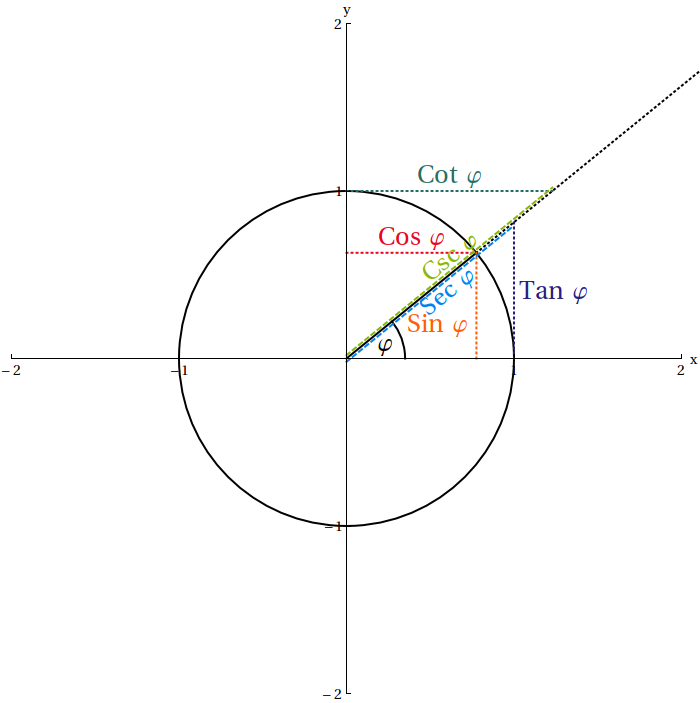

Section 4.3 Hyperbolic Trig Functions
We are all familiar with the trigonometric functions cosine, sine and tangent (to name the most prominent ones). There are also sometimes called circular functions because they can be defined on the unit circle. Besides these there is another "family" of functions called the hyperbolic trigonometric functions. In this section, we will explore these and contrast their properties to the usual trigonometric functions (we will call them circular trigonometric functions in the following to distinguish them from the hyperbolic trigonometric functions).
Let us start by looking at the graphs of the circular trigonometric functions. The hyperbolic trigonometric functions we would like to consider here are
- the hyperbolic cosine denoted cosh(x),
- the hyperbolic sine denoted sinh(x), and
- the hyperbolic tangent denoted tanh(x).
Let us plot them in SageMath.
You should see that they look quite differently from the circular trigonometric functions. In particular, the hyperbolic tangent seems to have horizontal asymptotes as \(x\to\pm\infty\text{.}\) We can check that this is indeed the case by calculating \(\lim\limits_{x\to\infty} \tanh(x)\text{.}\) In SageMath we can calculate this limit as follows: Again, you should now calculate \(\lim\limits_{x\to-\infty} \tanh(x)\) in SageMath. Also calculate \(\lim\limits_{x\to+\infty} \cosh(x)\text{,}\) \(\lim\limits_{x\to-\infty} \cosh(x)\text{,}\) \(\lim\limits_{x\to+\infty} \sinh(x)\) and \(\lim\limits_{x\to-\infty} \sinh(x)\) (do you get what you expect? Simply replace the \(\tanh\) with the other functions, and the +oo with -oo). What do you get if you replace the hyperbolic trigonometric functions with the circular trigonometric functions cosine, sine and tangent? Does this make sense?
In calculus, you calculate derivatives of the circular trigonometric functions, e.g., Let us use SageMath to calculate the derivatives of the hyperbolic trigonometric functions. Can you make a table comparing the circular trigonometric functions and their derivatives with the hyperbolic trigonometric functions and their derivatives? From this table — and the Fundamental Theorem of Calculus — it is immediate what the integrals/anti-derivatives of the (hyperbolic or not) sine and cosine are (namely?). For the tangent, we get as anit-derivative — note that this expression is missing a constant of integration that you should always include in your work, and that \(\log\) here denotes the natural logarithm that you usually might write as \(\ln\text{.}\) We have included a full_simplify() in the above command to force SageMath to not(!) use the secant. What is an anti-derivative of the hyperbolic tangent?
1
Hopefully SageMath gives you the expression \(\tan^2(x)+1\) here and not the far more useless expression involving the secant function that people seem to love memorizing!
Let us now turn our attention to definitions: For the tangent we have \(\tan(x)=\frac{\sin(x)}{\cos(x)}\text{.}\) For the hyperbolic tangent we similarly have \(\tanh(x)=\frac{\sinh(x)}{\cosh(x)}\text{,}\) which we can confirm in the following plot: This leaves us with the definitions of the hyperbolic cosine and sine.
Let us begin by looking at the following parametric plot: This shows us that
\begin{equation*}
t \mapsto \begin{pmatrix} \cos(t) \\ \sin(t) \end{pmatrix}
\end{equation*}
is a parametrization of the unit circle \(x^2+y^2=1\text{.}\) Thus the coordinates of any point on the circle can be expressed as \((\cos(t),\sin(t))\) for some value of \(t\in[0,2\cdot\pi)\text{.}\)
In the introduction to this project, we mentioned that \(\alpha x^2-\beta y^2=1\) for some positive parameters \(\alpha, \beta\gt 0\) describe hyperbolas. Let us consider the function \(f(x,y) = x^2 - y^2\) now, and make a contour_plot of this function (you might want to consult the "SageMath Lecture 2: Plotting in SageMath" again for this). Add an implicit_plot to this contour plot that highlights the level set with equation \(x^2-y^2=1\text{;}\) this is the unit hyperbola. Finally, make a parametric plot similar to the one above, but with cosine and sine replaced by their hyperbolic counterparts (and choose the values for \(t\) carefully).
You should see that
\begin{equation*}
t \mapsto \begin{pmatrix} \cosh(t) \\ \sinh(t) \end{pmatrix}, \qquad t\in\mathbb{R}
\end{equation*}
is a parametrization of the unit hyperbola (more precisely, only part of it — the left branch). Now there are many parametrizations of both the unit circle as well as the unit hyperbola, so what makes this one special? E.g., here is another parametrization of the unit circle: That is,
\begin{equation*}
t \mapsto \begin{pmatrix} \frac{1-t^2}{1+t^2} \\ \frac{2t}{1+t^2} \end{pmatrix}, \qquad t\in\mathbb{R}
\end{equation*}
also yields the unit circle (this parametrization turns out to be useful when one integrates functions containing trigonometric functions). The property that makes the parametrization
\begin{equation*}
t \mapsto \begin{pmatrix} \cos(t) \\ \sin(t) \end{pmatrix}, \qquad t\in[0,2\pi)
\end{equation*}
useful is that there is an immediate interpretation of the parameter \(t\) in this case:
- it is the angle at the origin measured in radians, or, alternatively,
- it is the length of the circular arc on the unit circle from the point \((1,0)\) to \((\cos(t),\sin(t))\) in counter-clockwise direction.
As a result, the trigonometric functions can all be defined on the unit circle (in fact, in two slightly different ways).

Instead of an angle (or arc length), the parameterization for the hyperbolic functions is related to an area. To motivate this, let us have a look at the unit circle again: The circular sector between the \(x\)-axis and the segment connecting the origin with the point \((\cos(\alpha),\sin(\alpha))\) on the circle has area \(\frac12\alpha\text{.}\)
Now let us look at the similar area on the unit hyperbola:
What is the area of the shaded region here? This area is bounded by the straight line from the origin to the point \((\cosh(x),\sinh(x))\) (for a fixed value of \(x\)) on the hyperbola, the \(x\)-axis and the unit hyperbola \(x^2-y^2=1\) (what do you get if you make \(y\) the subject?). We calculate this area in SageMath, and confirm that its value is \(\frac12\,x\) (here, by checking that the straight line \(y=\frac12x\) for \(x\ge 1\) coincides with the value of the integral/value associated with the point \((\cosh(x),\sinh(x))\)):
In fact, it turns out that the hyperbolic cosine and sine can be expressed using the exponential function as
\begin{equation*}
\cosh(x) = \frac{e^x+e^{-x}}{2} \quad\text{and}\quad \sinh(x) = \frac{e^x-e^{-x}}{2} .
\end{equation*}
You might be familiar with corresponding formulae for the (circular) cosine and sine from Euler’s formula (which one also uses, e.g., in the de Moivre’s formula), namely, \(e^{ix} = \cos(x)+i\,\sin(x)\text{.}\) This leads to
\begin{equation*}
\cos(x) = \frac{e^{ix}+e^{-ix}}{2} \quad\text{and}\quad \sin(x) = \frac{e^{ix}-e^{-ix}}{2i} .
\end{equation*}
Lastly, we note the following: The (circular) trig functions \(\sin\text{,}\) \(\cos\) and \(\tan\) have an arc length on the unit circle as their argument — thus, the proper names of the inverse trig functions are \(\arcsin\text{,}\) \(\arccos\) and \(\arctan\text{,}\) respectively. Similarly, the hyperbolic trig functions \(\sinh\text{,}\) \(\cosh\) and \(\tanh\) have an area on the unit hyperbola as their argument — thus, the proper names of the inverse hyperbolic trig functions are \(\operatorname{arsinh}\text{,}\) \(\operatorname{arcosh}\) and \(\operatorname{artanh}\text{,}\) respectively, i.e., not an "arc" but only an "ar" (short for "area") as initial syllable.
2
With "proper" we want to stress that the notation \(\sin^{-1}\text{,}\) \(\cos^{-1}\) and \(\tan^{-1}\text{,}\) respectively, is for many reasons ill-advised.